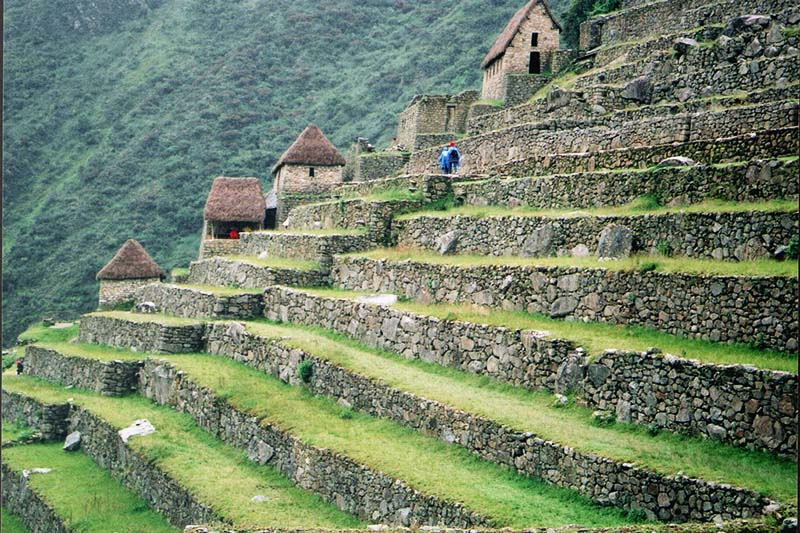
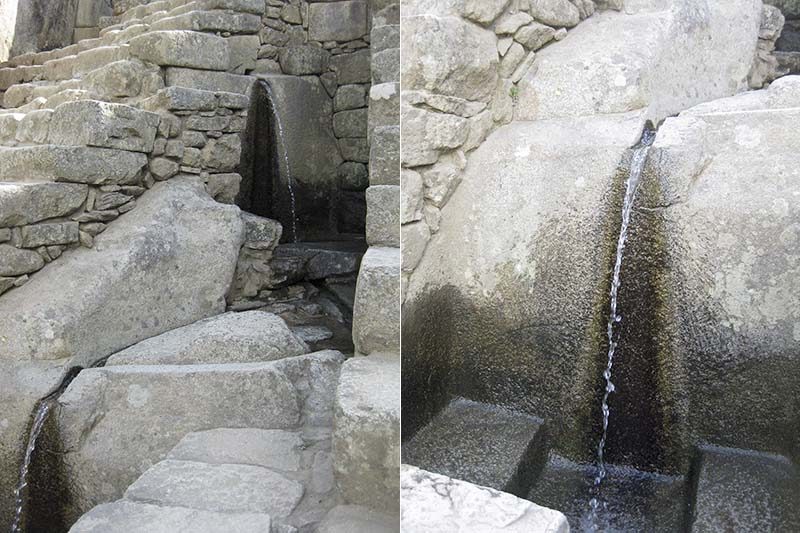
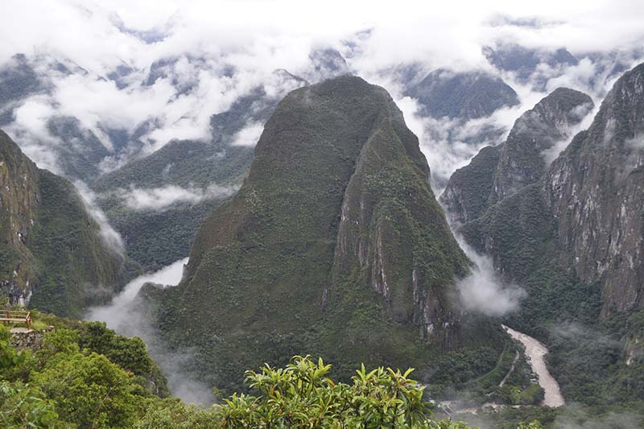
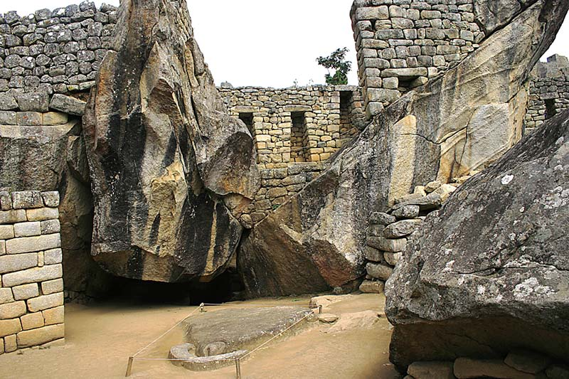
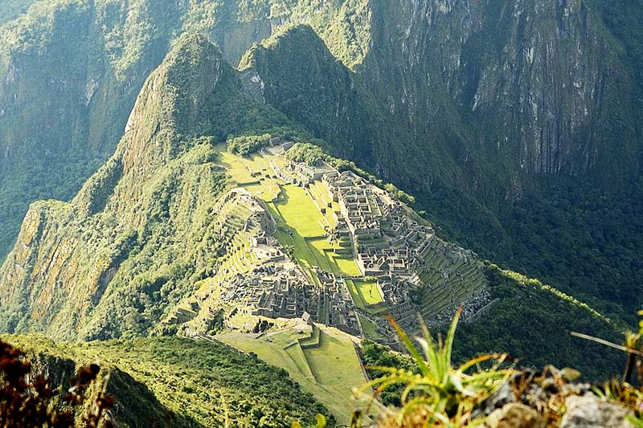
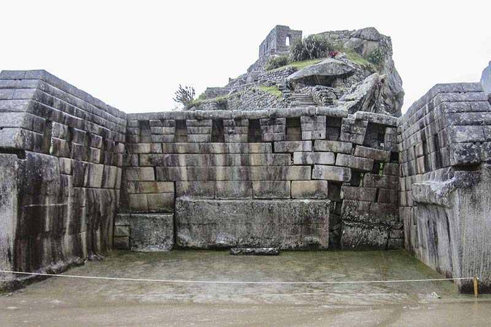
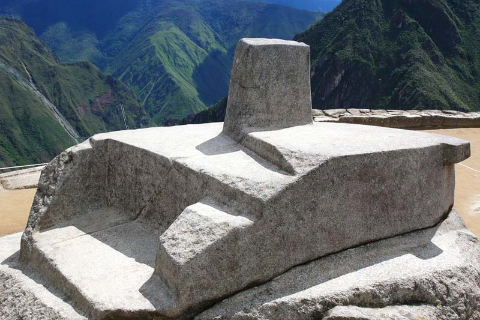
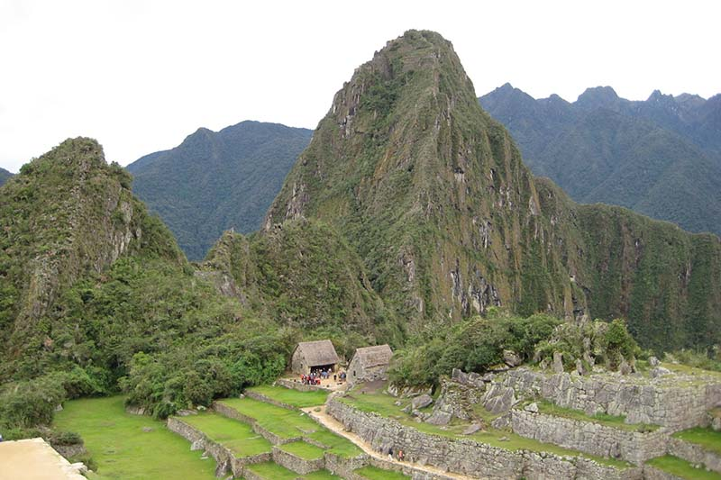

- TERRAZAS
- ESCALERA DE FUENTES
- LA MONTAÑA PUTUCUSI
- TEMPLO DEL CÓNDOR
- PALACIO REAL Y ACLLAHUASI
- MONTAÑA MACHU PICCHU
- TEMPLO DEL SOL
- LA PLAZA SAGRADA
- EL INTIHUATANA
- HAYNA PICCHU
Las terrazas o andenes son estructuras representativas del Imperio inca, fueron un avance muy significativo para la agricultura practicada por los incas, con lo cual lograron generar microclimas en distintos niveles de las laderas de las montañas donde usualmente fueron construidas. Machu Picchu debía ser una ciudad autosostenible, por lo que se asignó un sector agrícola en la ciudad inca, aquí es donde se pueden observar los bellos andenes junto a algunas Colcas (almacenes).

El agua es fundamental para el funcionamiento de cualquier ciudad. Machu Picchu posee todo un sistema de fuentes que dotaba de agua fresca a la ciudad y que hasta ahora siguen en funcionamiento. Dentro de todas estas sobresale la Escalera de Fuentes, una asombrosa obra de ingeniería hidráulica, que consta de 16 caídas artificiales de agua cuidadosamente talladas y labradas, se ubica entre el Templo del Sol y el Palacio Real.

Cuando se realiza la visita a la ciudad inca de Machu Picchu, se puede observar una montaña que de forma alegre se alza a un costado de Machu Picchu, es la montaña Putucusi o montaña feliz. Este atractivo es muy poco conocido por los visitantes , debido a la dificultad que implica realizar el recorrido hasta su cima y el tiempo que demanda, pero una vez ahí las vistas son increíbles y se puede observar a Machu Picchu desde un ángulo distinto. A diferencia de las demás montañas de Machu Picchu, no se necesita de ningún boleto en especial para subir al Putucusi; aún. La subida es exigente por lo que es una aventura no apta para todos.

El Templo del Cóndor es uno de los más llamativos y sorprendentes en Machu Picchu, lo incas acomodaron una formación natural rocosa que fue tallada en forma de alas junto a otra piedra esculpida que forman la cabeza y el cuello de un cóndor. Esta construcción es una representación en tres dimensiones del ave sagrada de los incas, símbolo del poder y la fertilidad, y que forma parte de la trilogía inca del cóndor, el puma y la serpiente.

En el sector residencial de Machu Picchu se puede observar dos recintos que están construidos de manera especial. El Palacio Real es una vivienda realizada con fina mampostería y es la más grande del lugar, además de tener un lugar preferencial. La Acllahuasi fue probablemente un lugar donde habitaban las vírgenes dedicadas a la religiosidad, es un recinto de varios bloques construido con mucho detalle y con la particularidad de tener un solo acceso hacia ella, en uno de los bloques del lugar se puede encontrar la Sala de los Morteros donde se hallan talladas dos vasijas circulares también conocidos como Espejos de Agua.
Es la montaña sobre la cual se asienta la ciudadela de Machu Picchu, realizar una caminata a través de ella le permitirá observar paisajes sin igual de todo el santuario, y una vez en su cima podrá ver de manera única la ciudad inca y su entorno. Si bien es una caminata un tanto agotadora, la pueden realizar todos, ya que sus senderos son amplios y no muy empinados. Esta montaña es la alternativa ideal para quienes no se atreven a subir a la montaña Huayna Picchu o para los que no pudieron conseguir un cupo para esta.

El Templo del Sol es una vistosa estructura con un torreón de forma circular ubicada en el sector religioso de Machu Picchu, es de granito construida al estilo inca imperial. Dentro del templo se encuentra un altar ceremonial tallado en roca, en las paredes de la misma se ubican dos ventanas desde donde se pueden observar la salida del sol durante los solsticios de verano e invierno de forma exacta. En el interior del templo hay un patio rectangular donde se pueden observar 9 hornacinas con una puerta con anillos de seguridad. El torreón del Templo del Sol tiene como base una enorme roca en la cual se halla una pequeña cueva cubierta por mampostería fina, se cree que fue un mausoleo, donde incluso pudo haber estado la momia del Inca Pachacuteq.
En este lugar se pueden encontrar dos de las estructuras más sobresalientes de Machu Picchu. El Templo Principal, que es un recinto enmarcado con tres paredes con bloques finamente labrados y que se piensa que fue el templo más importante de la ciudad. Y el templo de las Tres Ventanas, una hermosa estructura lítica que consta de tres muros poligonales, construidos con enormes piezas líticas perfectamente ensambladas con gran arte y maestría, destacan tres bellas ventanas de forma trapezoidal y dos hornacinas, una a cada lado, las tres ventanas habrían sido ubicadas allí por un motivo mágico-religioso.

El Intihuatana es la pieza lítica más conocida de Machu Picchu y sin lugar a dudas la más enigmática. Se trata de un reloj solar, esta esculpida en una sola pieza, y en sus diferentes caras proyecta sombras, en relación al movimiento del sol y las diferentes estaciones del año, con este artefacto los incas realizaban observaciones y mediciones precisas sobre el clima. Muchos de los visitantes se acercan a ella para llenarse de la energía que emana de esta.

La montaña Huayna Picchu es sin lugar a dudas el atractivo más deseado y popular de Machu Picchu, es la singular montaña que se ve en todas la fotos clásicas de Machu Picchu, escalarla es una increíble aventura. Cuando se ve la montaña desde abajo luce muy empinada y subirla puede generar un vértigo intenso, pero llegar a su cima puede significar el momento más grandioso de su vida, la sensaciones desde allí son muchas y las vistas serán fabulosas e inolvidables. Y no es lo único, ya que en la montaña Huayna Picchu también se encuentra el Templo de la Luna, además de varias construcciones incas desde donde se puede contemplar todo el santuario. Recuerde que para subir a esta increíble montaña debe adquirir el Boleto Machu Picchu + Huayna Picchu, pero debe hacerlo con al menos dos meses de anticipación, ya que es muy solicitado.
